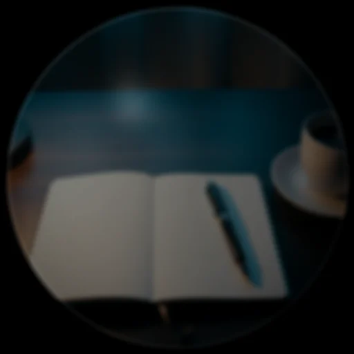
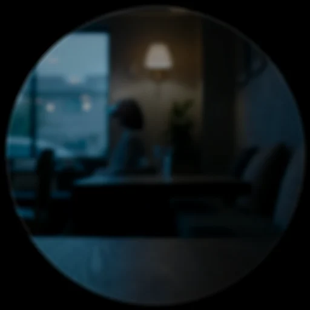

Scholar and TasteLens — the World lenses
Two lenses turn "look at a thing" into "get the thing done": Scholar reads what is written in front of you — a question, a form, dense prose — and TasteLens ranks what is in front of you — a shelf, a menu. Both are routed by the Glance Arbiter (the look decides the lens; no mode picker) or invoked by voice, and both share one honest failure state: with no Brain to read through, they show "Connect a Brain to read this" instead of a guess.
Scholar — read it, fill it, say it plainly
orchestrator/scholar.py. One class, three capabilities, each returning a
ScholarResult and a ScholarCard (dismiss 9 s, eyebrow by mode):
Answer — "what's the answer?"

answer(frame, question="") reads the question in view and answers it. The
prompt demands a structured ANSWER: / WHY: reply; confidence is 0.85,
knocked to 0.55 when the model hedges (the same hedge-word discipline as
Veritas). Voice: "what's the answer", "answer this", "solve this".
Form help — "how do I fill this out?"
form(frame, purpose="") reads a form and returns a summary plus one
FIELD: label — what to write line per field (up to six listed on the
card). Voice: "how do I fill this out", "fill out this form" — with an
optional purpose ("...to change my address").
Plain words — "what does this mean?"
explain(frame) turns dense text — a contract clause, a spec, legalese —
into a gist plus key points. Voice: "explain this", "what does this
mean", "summarize this", "put this in plain English", "break this
down".
How it reads, and what gates it
The vision seam is injected (read_fn); the orchestrator wires it to
brain.explain — local vision model first, cloud only when opted in,
never while incognito — with a text-knowledge fallback through
brain.ask. Veil-gated at the read. A spoken Scholar phrase also arms the
Glance Arbiter for 6 seconds: say it, then look, and the next glance
routes straight to that mode. Tests: test_scholar.py, including
no_brain_returns_an_unavailable_card_not_a_guess.
The chooser
When a look is genuinely ambiguous — a page that could be a question, a form, or prose — the arbiter shows the GlanceChoiceCard (dismiss 6 s, up to three one-tap options). A pick runs the lens and teaches the arbiter's per-scene priors, so tomorrow's ambiguous look leans your way:
TasteLens — the real-world choice engine
orchestrator/taste.py. Look at a shelf or a menu and get the pick — with
the why spelled out, and nothing silently hidden:

The ranking rules (pure, offline-testable)
rank(items, profile, budget) is deliberately plain:
- Dietary vetoes are hard. A "no dairy" profile hit sinks an item to the bottom, flagged with a cross — shown last, never silently dropped.
- Budget is a soft gate. Over-budget items rank below eligible ones but above vetoes.
- Score = rating (out of 5) plus a small cheaper-is-better tiebreak (capped at 0.1, so price can never overturn a full rating point).
- Sort is stable and honest: eligible, then over-budget, then vetoed.
The winner renders in hero type with its reasons ("no dairy - 4.6 stars - $3.20"); runners-up stack beneath with theirs.
The two seams, and the first connector
read_fn(frame) turns the shelf into labeled items (routed through the
Brain's vision tier under the usual cloud rules), and shop_fn(label,
attrs) fills in ratings and prices. Shop providers are a plugin
extension point (add_shop_provider) — the first real one is the
Open Food Facts connector: Nutri-Score becomes a rating (A maps to 4.8,
E to 1.0), allergens are flagged into the veto path, results are cached
per label for 300 seconds (misses too, so a miss is not retried every
glance), and transient network errors retry twice with backoff while 4xx
errors never retry. Multiple providers merge first-provider-wins per field,
each isolated so one failing connector cannot break the read.
Routing and gating
The arbiter's TasteLens candidate bids 0.88 on a shelf or menu scene
(0.6 when at least two items are visible in any scene). Veil-gated;
unavailable state when nothing reads. Tests: test_taste.py and
test_taste_connector.py.
Docent — the venue speaks
The newest World surface (ops_world_lenses.py: docent): a museum, shop,
or venue publishes its own knowledge as a LocalRecall collection, and a
question asked there is answered from its passages — grounded, cited,
truncated to one Scholar answer card. The collection syncs on arrival, so
the answer works fully offline; with a model wired the passages are
composed, without one the top passages speak for themselves. Veil-gated
like every lens. (Tests: test_docent.py.)
Rosetta Live — the ear, offline
Rosetta the eye translates what you look at; Rosetta Live
(translate_heard) translates what someone is saying — in your
language, fully offline when the Argos translation pack is installed.
Nothing is recorded, nothing leaves, and incognito silences it entirely.
It was also the pilot for the platform's new
output-shape rule: instead of
flashing one caption card per utterance, the translate path now deploys a
single Rosetta figment — three named slots on one screen
({slot:langs} "ES → EN", {slot:translation} in primary type,
{slot:original} beneath) — refreshed in place as each utterance lands,
dismissed with a long press. One lens, reused across the whole
conversation; the caption card survives only for the raw transcript role.
(Tests: test_rosetta_live.py, plus the device-Lua stage drawing all
three slots.)
On the glass
All three now render on the device itself: Scholar and Taste share the World-lens bed (glass pane, bloomed spring-in cue dot, gradient separator, stacked info rows with vetoes cooled to the attention-dim twin), and the Glance chooser is circular-native — its options are bloomed nodes on an upper arc that spring in staggered, labels appearing inside the ring as each lands. Their settled holds are part of the device golden contract.
| Scholar on the device Lua | TasteLens on the device Lua | The chooser on the device Lua |
|---|---|---|
The honest no-Brain state renders on-glass too — "Connect a Brain" in ghost ink rather than a guess: